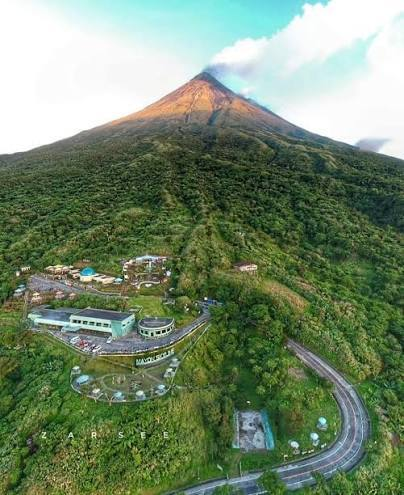

The Mayon Skyline View Deck, also known as the Mayon Rest House, is a nature park nestled directly on the eastern slope of Mt. Mayon in Tabaco City, Albay. Sitting at an impressive altitude of 2,700 feet above sea level, it offers visitors the closest vantage point to Mayon Volcano's peak that is accessible by motorized vehicles.
